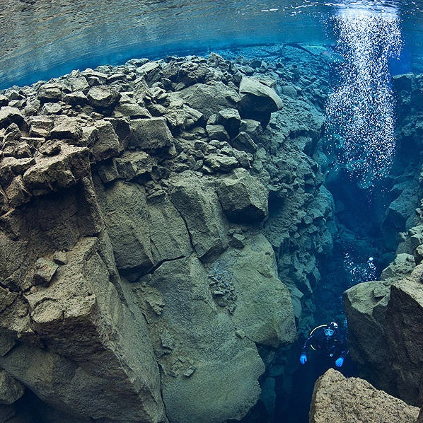

O que ser esse tal de "tectonismo"?
Sismo, também chamado de abalo sísmico, tremor de terra, terremoto ou terramoto, é o resultado de uma súbita liberação de energia na crosta do planeta Terra, geralmente por conta do choque entre placas tectônicas, o que cria ondas sísmicas.
As placas tectônicas movem-se graças à ação das chamadas células ou correntes de convecção, que são os movimentos circulares exercidos pelo magma e que funcionam como uma espécie de “esteira” que, ao girar, provoca o deslocamento dessas placas.
As placas tectônicas movimentam-se e interagem-se a partir de dois movimentos principais: a orogênese e a epirogênese.
Tectonismo
Quais são os movimentos?
- O Movimento de afastamento: consiste no distanciamento entre duas placas, formando uma lacuna que é preenchida com fragmentos de rochas oriundas do manto em estado líquido.
- Movimento de colisão e soerguimento: corresponde ao choque entre duas placas litosféricas, as camadas de rochas elásticas dão origem às cadeias de montanhas, em diversas vezes vulcânicas, com essa característica de formação temos as cordilheiras dos Andes e o Himalaia.
- Movimento de deslizamento: é responsável, em certos casos, pelos abalos sísmicos, ocorre pelo fato de uma placa se locomover sobre a outra.